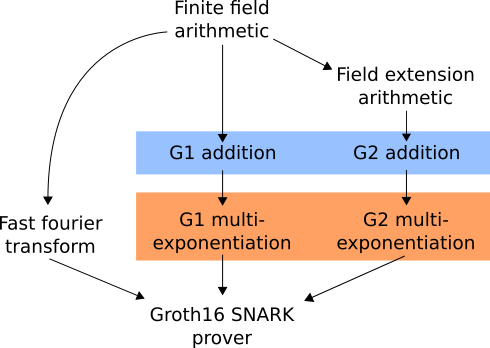

This is the full Groth16 prover, or a slightly simplified version of it. It is the main event of the SNARK Challenge. Note that there are many prizes here, and so many ways to win.
It requires performing 7 FFTs, 4 multiexponentiations in G_1 and 1 multiexponentiation in G_2. How exactly is described below.
This video gives a high-level description of a lot of the SNARK prover and a walk-through of a partial JavaScript implementation.
Here is a diagram of the various parts of the prover and how they fit together:
Check out this page for a fuller high-level description.
The majority of the time is spent the multiexponentiations, so optimization efforts should be focussed there initially.
The following problem is defined for any choice of (F, G_1, G_2) in
MNT4753: (𝔽MNT4753.r, MNT4753.G_1, MNT4753.G_2)MNT6753: (𝔽MNT6753.r, MNT6753.G_1, MNT6753.G_2)You can click on the above types to see how they will be represented in the files given to your program. uint64 values are represented in little-endian byte order. Arrays are represented as sequences of values, with no length prefix and no separators between elements. Structs are also represented this way.
The parameters will be generated once and your submission will be allowed to preprocess them in any way you like before being invoked on multiple inputs.
d + 1 is guaranteed to be a power of 2 in the MNT4753 case and of the form 2^x 5^y in the MNT6753 case.
This problem is a version of the Groth16 SNARK prover, simplified to the difficult core of the problem.
If P, Q are points on an elliptic curve (either G_1 or G_2) and s : F, then P + Q denotes the sum of the points as described here and s \times P denotes the scalar-multiplication of P by s as described here.
The output should be as follows.
where
Let \omega = \sigma^{(r - 1) / (d + 1)}. This guarantees that we have \omega^{d + 1} = 1. Look at the MNT4753 or MNT6753 parameter pages to find the value of \sigma in each case.
H is an array of the coefficients of the polynomial h(x) = \frac{a(x) b(x) - c(x)}{z(x)} where a, b, c are the degree d polynomials specified by
\displaystyle \begin{aligned} a(\omega^i) &= ca[i] \\ b(\omega^i) &= cb[i] \\ c(\omega^i) &= cc[i] \\ \end{aligned}
for 0 \leq i < d + 1 and where z is the polynomial \displaystyle \begin{aligned} z(x) &= (x - 1)(x - \omega^1) \dots (x - \omega^{d}) \\ &= x^{d} - 1 \end{aligned}
One would want to obtain the coefficients of h by computing its evaluations on \omega^0, \dots, \omega^{d} as (d[i] * d[i] - d[i]) / z(ω_i) for each i. This won't work however as z(\omega^i) = 0 for each i. Alternatively, one can do the following.
Use the coefficients of these polynomials to compute the evaluations of of a, b, c on the "shifted set" \{ \sigma , \sigma \omega^1, \sigma \omega^2, \dots, \sigma \omega^{d}\}.
Let's say ea is an array with ea[i] being the ith coefficient of the polynomial a. Then we can evaluate a on the set \{ \sigma , \sigma \omega^1, \sigma \omega^2, \dots, \sigma \omega^{d}\} by computing sa = ea.map((ai, i) => sigma**i * ai) and then performing an FFT on sa. Analogously for the polynomials b and c to obtain evaluation arrays eb and ec.
Note that z(\sigma \omega^i) = \sigma^{d} \omega^{d} - 1 = \sigma^{d} - 1. So, having computed sa, sb, sc, you can compute the evaluations of h(x) = \frac{a(x) b(x) - c(x)}{z(x)} on the shifted set as sh[i] = (sa[i] * sb[i] - sc[i]) / (sigma**d - 1).
Finally, we can now obtain the coefficients H of h by performing an inverse FFT on sh to obtain shifted_H and then computing H[i] = shifted_H[i] / sigma.
All in all, we have to do 3 FFTs and 4 inverse FFTs to compute the array H, perform 4 multiexponentiations in G_1 and 1 multiexponentiation in G_2.
.
Your submission will be run and evaluated as follows.
PATH_TO_MNT4753_PARAMETERS and PATH_TO_MNT6753_PARAMETERS.Your binary main will be run with
./main MNT4753 preprocess PATH_TO_MNT4753_PARAMETERS
./main MNT6753 preprocess PATH_TO_MNT6753_PARAMETERSwhere PATH_TO_X_PARAMETERS will be replaced by the actual path.
./MNT4753_preprocessed and ./MNT6753_preprocessed.The submission runner will generate a random sequence of inputs, saved to a file PATH_TO_INPUTS.
Your binary will be compiled with ./build.sh. This step should produce a binary ./main.
Your binary will be invoked with
./main MNT4753 compute PATH_TO_MNT4753_PARAMETERS PATH_TO_INPUTS PATH_TO_OUTPUTS
./main MNT6753 compute PATH_TO_MNT6753_PARAMETERS PATH_TO_INPUTS PATH_TO_OUTPUTSand its runtime will be recorded. The file PATH_TO_INPUTS will contain a sequence of inputs, each of which is of the form specified in the "Input" section.
It should create a file called "outputs" at the path PATH_TO_OUTPUTS which contains a sequence of outputs, each of which is of the form specified in the "Output" section.
It can, if it likes, read the preprocessed files created in step 1 in order to help it solve the problem.
The output of your submitted program will be checked against the reference implementation at this repo here. The "main" file is here. The core algorithm is implemented here.